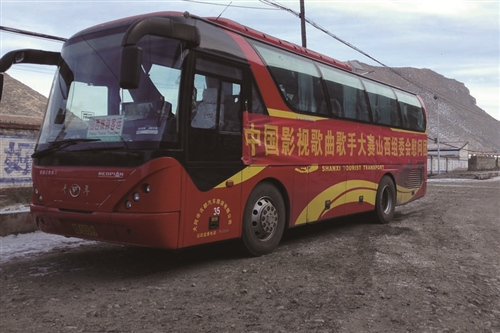
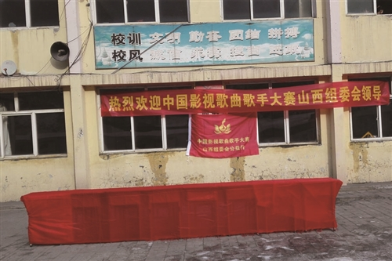
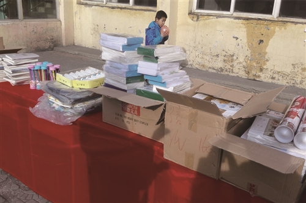
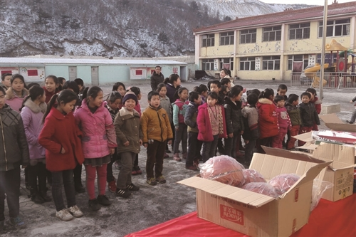

2016挥手已去，2017如约而至。2017年1月2日元旦佳节之际，首届“中国影视歌曲歌手大赛”山西省组委会开启了新年公益之行。组委会的全体工作人员们早早驱车出发，经过了几个小时的车程，来到了白雪覆盖的大山中的星点一样的小村庄—浑源县大仁庄乡中心学校，学校的孩子们已经在学校空地上等候着，组委会的工作人员们紧锣密鼓的搬运摆放爱心物资。大赛组委会主席李博激动的说：“我生在浑源，长在浑源，为了回报我的家乡，帮助山区里的孩子们，我们首届‘中国影视歌曲歌手大赛’山西省组委会借此元旦佳节之际，尽微薄之力，为孩子们献出一点爱心，为孩子们提供一个好一点的学习条件。希望孩子们都能够健健康康的成长，天天向上，学习进步，长大后多为祖国做贡献。"
组委会工作人员将准备好的文具、体育用品等一一分发到每个孩子们的手中，孩子们怀抱着彩笔、书包、篮球、羽毛球拍等，脸上洋溢着天真灿烂、幸福的笑容。他们说：“我们非常感谢首届‘中国影视歌曲歌手大赛’山西省组委会的叔叔阿姨们在这么冷的天气里，赶这么远的山路，来给我们送来的这些礼物，我们以后一定要好好学习、天天向上，去回报大家、回报社会。”校长周宝军激动的说：“我们非常感谢大赛山西省组委会的领导及全体工作人员们的捐赠义举，希望更多的爱心人士能够关注、关爱贫困山区的孩子们，也希望中国影视歌曲大赛圆满成功!”
活动中，纯朴的孩子们真诚地、认认真真地为前来慰问他们的爱心人士们戴上了鲜艳的红领巾，在他们的心里，红领巾就是他们求学路上的坚持和奋进的旗帜，也是他们对爱心人士们无言的感谢。



